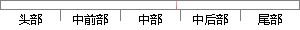

在声纹识别系统中，模型的建立至关重要，不同的模型建立方法对识别的性能影响不同。
片段位置图

相似结果|
相似片段 1：1．2．3声纹识别模型发展现状及分析对声纹识别来讲，模型的选择和建立是重中之重。一个高性能的识别系统，须拥有不同的模型，以适应不同的应用场合。随着研究的深入，针对各种特征提出了一系列的模式匹配方法
|
※ 片段修改建议 ※
近似词参考：- 模型：模子
- 建立：成立 创立 创设 建树 确立 设立建设 竖立 创建 树立
- 不同：分歧 差别
- 模型：模子
- 建立：成立 创立 创设 建树 确立 设立建设 竖立 创建 树立
- 方法：方式 要领 法子
- 识别：辨认
- 别的：此外 另外 其它 其余
- 性能：机能
- 不同：分歧 差别
系统自动生成语句：在声纹辨认系统中，模子的成立至关重要，分歧的模子成立方式对辨认的机能影响分歧。
注：本片段修改建议为系统自动生成，仅供参考。